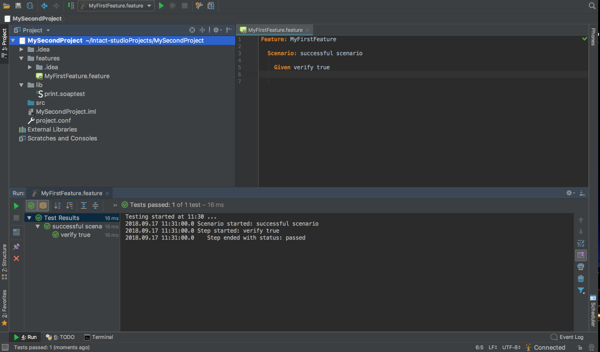
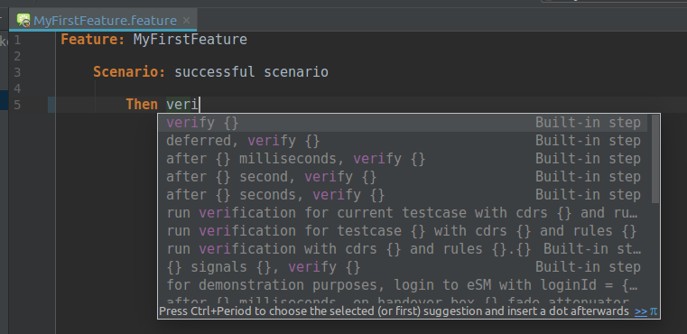
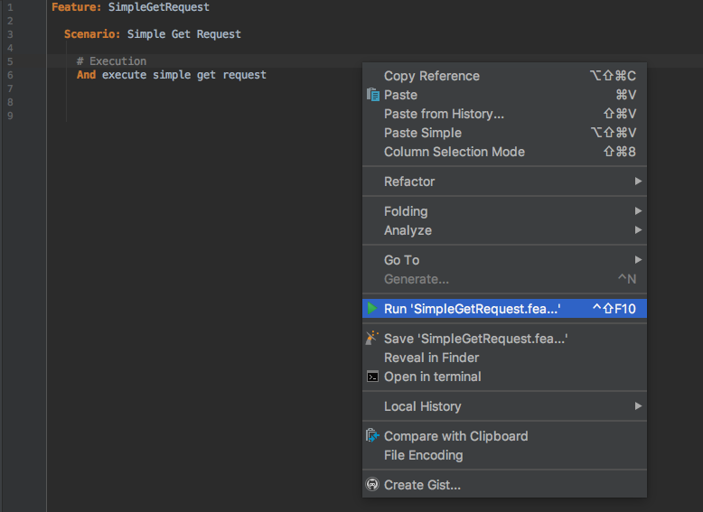
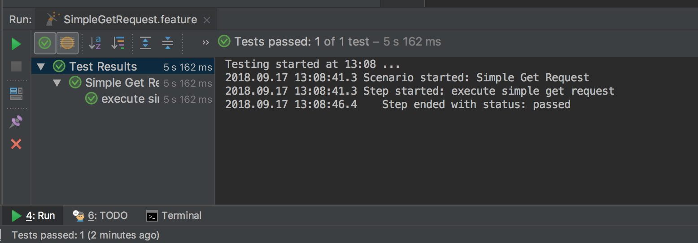
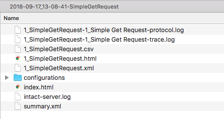
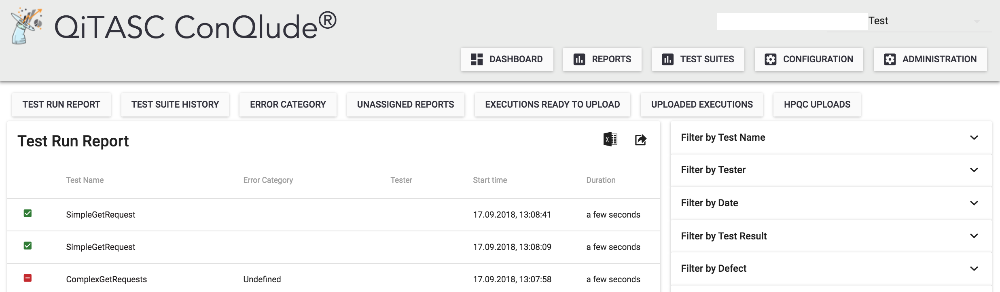
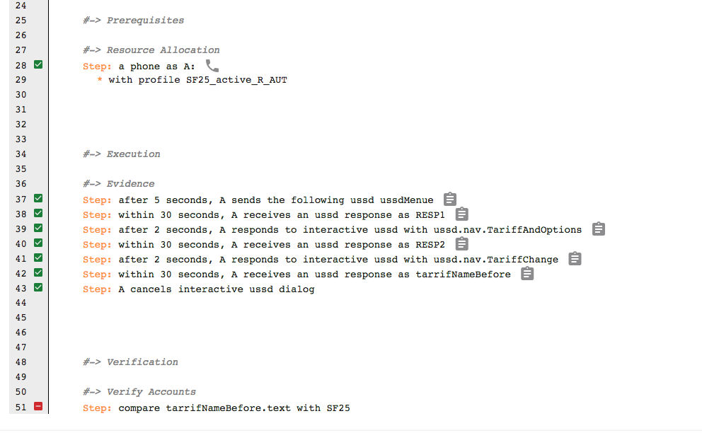

INTACT Studio is our integrated development environment (IDE) that allows users to write and execute test case, and manage projects. The application is based on Intellij IDEA, so if you’ve used the platform, INTACT Studio will seem familiar to you.
This article will demonstrate the concepts used to build a basic suite of test cases, and how they look inside INTACT Studio. If you would like to try out the activities, an INTACT Tutorial is available with step-by-step instructions to create the files illustrated in this article. At the end of the article, you should have a better understanding of the components used to construct projects and their test cases.
Project Directories
Although not necessary, creating directories to hold files is a good practice to keep your projects manageable. In a small project, a the directory might look similar to the one below:

This project contains all the most important, frequently-used INTACT files and is structured according to each file type:
featuresdirectory: Feature Files, which contain Scenarios or Scenario Outlineslibdirectory: Step Definitions- Root project directory (
MySecondProject): Configurations
Feature Files
The most basic INTACT test cases consist of a single Feature File that defines the steps you want to execute. Many new users start by familiarizing themselves with constructing Feature Files before moving on to Step Definitions and configurations. A Feature File contains one or more Scenarios or Scenario Outlines, which define desired outcomes and the steps used to reach them.
INTACT Studio includes an auto-complete feature to help you write your test cases and find INTACT’s built-in and your custom-defined steps more easily. When you start typing your first step, you’ll probably see some suggestions pop up:

The {} curly braces indicate parameters that you can fill in with values specific to the test. For example, a number to indicate how many seconds to wait.
Scenarios and Scenario Outlines
Feature files may contain Scenarios or Scenario Outlines. A Scenario defines all the steps in a Feature File, line-by-line, that will be executed in a Feature File. For example:
Scenario Example
Feature: Phones
Scenario: Select specific phones
Given an Android phone as A where network == "3G"
Given an Android phone as B where network == "4G"
A Scenario Outline enables running a test case with values for each iteration. For example, if you have a series of test cases that all perform the same activities, and the only difference is each test case has phones registered to a network, a Scenario Outline can greatly reduce the amount of time and effort required to write and maintain the tests.
Scenario Outline Example
Feature: Phones
Scenario Outline: Selecting specific phones with Scenario Outline
Given an Android phone as A where network == <network1>
Given an Android phone as B where network == <network2>
Examples:
| network1 | network2 |
| "3G" | "2G" |
| "4G" | "3G" |
Creating Custom Steps
Although INTACT contains many built-in steps that are used to construct test cases, Step Definitions are often created to automate additional functionality. These are written in .soaptest or .webtest files, and are called from Feature Files.
Step definitions may contain functions and models for:
- Integrating backend systems such as HTTP/REST interfaces, SSH or SCP via INTACT’s Built-ins
- Webtest Views that define the elements of webpages or apps, as well as the actions to be performed on them
- Creating Virtual Phones for switching between real and simulated devices
- Creating custom messages that parse test case results or print information to the INTACT log
Custom Stepdef Example
stepdef "execute simple get request"
request := Http.get("https://httpbin.org/get")
.addHeader("Content-Type", "text/plain")
.build()
response := Http.executeHttpRequest(request)
response.writeToFile(File.fromProject("simple-get-response.txt"))
end
The example above shows a custom Stepdef that executes an HTTP request. The associated Feature File will contain a step that matches the text following the stepdef keyword. We saved our Stepdef file into a project subdirectory called lib, which is a recommended practice for keeping files organized and easy to find.
Custom Feature File Step Example
Feature: SimpleGetRequest
Scenario: Simple Get Request
# Execution
And execute simple get request
If you the execute Feature File above, the test case will fail. This is because one final component is required: a configuration file that tells INTACT where to find the custom steps that the Feature File calls.
Configurations
INTACT enables further test case customization through its flexible configurations. These configurations manage issues such as:
- Phone and subscriber properties, e.g., creating customers with different Tariffs, phone numbers or network preferences
- Backend system integrations into INTACT, e.g., configuration and SSH access so that tests can access external customer databases
- Reporting services, E-mail preferences and user access
- Browser preferences for web and apptests
One of the most commonly-used configurations is the Glue path. This is a one-line configuration that tells INTACT where to find custom Stepdefs. Because Glue path is relative, saved at the root project directory, it is quite simple:
Glue Configuration Example
Glue.path = ["lib"]
The lib is the folder define in the example project about, where custom Stepdefs are saved. Its path is relative to the project root folder.
Executing the Test
To Execute a test case, you can click on the green Run button in INTACT Studio, or right-click on your feature file and select Run from the drop-down menu. For power users, plenty of shortcuts are also available.

When you execute a test case, INTACT Studio shows test output at the bottom of the window. Users can toggle between a Protocol log, a Trace log or an INTACT Server log, depending on what information they would like to see. The example below shows Protocol log output for our HTTP test:
Test Case Output Example 
Evaluating the Results
Besides the INTACT Studio test output windows, two additional features allow users to further evaluate the results of a test case execution in greater detail:
- INTACT Reports
- ConQlude Reporting Service
INTACT Reports
Every time a test case is executed, the INTACT Server stores a report of the test execution under the reports folder. This folder contains a set of logs outputs, configurations, reports and other artifacts created by the test execution. By default, this folder is in the INTACT Server installation directory.
Report Folder Example 
Our reports folder only contains a few files. Test cases with a lot of custom steps, or that use features such as the INTACT Audio Plugin, may generate many more files within each reports folder.
QiTASC ConQlude Reporting Service
Users who have a QiTASC ConQlude license can also access test execution reports and artifacts. The ConQlude reporting service is a web interface that contains a centralized storage of all test execution reports created by members of a project. It also enables users to filter for test results and perform actions such as verifying, exporting to external project management systems, and assigning error categories.

Each test execution has its own unique report in ConQlude. In ConQlude, the icons next to steps indicate attachments types (which contain, e.g., images, text, audio or metadata). These attachments are particularly helpful when troubleshooting failed test cases or identifying defects:
ConQlude Test Output Example 
Conclusion
There are several file types available to create and customize INTACT test cases using INTACT Studio. First we introduced Feature Files, which contain a set of steps that define the test objective and the actions that will achieve the objective.
Second, we demonstrated the difference between Scenarios and Scenario Outlines, the latter of which help users to iterate over the same steps multiple times while providing input parameters each time. These Scenario Outlines are quite useful when you have tests that have the same steps and parameters, but require parameter values, such a different network ID for each test. Scenarios, on the other hand, define all the steps, parameters and values for a single test execution.
We also showed what a custom Stepdef could look like that links an HTTP get request to a Feature File. Then we showed how to configure your Glue path so that INTACT knows where to find custom steps. Finally, we showed a few different ways to evaluate test execution output. After reading this article, you should have a better understanding of how the different components of INTACT used to construct your test projects.
Want to see more examples about getting started with INTACT? Visit INTACT Tutorials to learn more!